python发展到目前主要形成两个版本分析,2.7.x系统和3.x系列。由于两个系列之间的语法存在较大差异，所以建议选择一个分支。如果你要兼容以前老版本(一般redhat系的服务器操作系统随系统安装的python版本都是2.7以下的)建议选择2.7分支学习。如果你是从头学习python，并且只在比较新的系统上运行，那可以使用3.x的语法，设计更合理，使用更加简洁，目前支持的库也比较齐全了。
我们这里选择2.7.x的语法。在*NIX系统下默认已经安装有python环境了，只是python的交互shell比较弱，可以再安装个ipython软件，可以智能补全，高亮等。
这里，我们主要介绍window下的安装步骤:
安装完python包后，python自带一个交互式shell，一个命令行，及一些文档。此时就可以开始根据“Python Manuals”文档中的Tutorial来快速入门了。
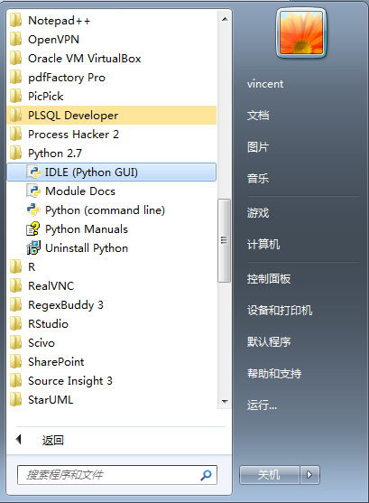Python Shell界面
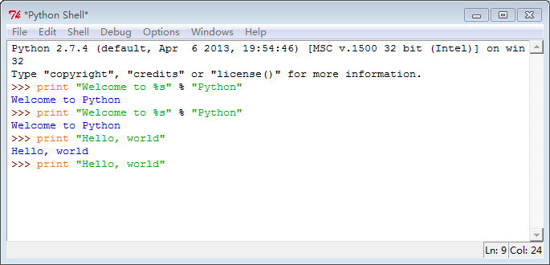使用tab或 Alt+/ 进行补全提示，使用alt+p和alt+n进行历史命令选择
这里介绍如何在python下安装扩展模块。python跟java一样，拥有很多库，基本上你想用的库都能在python官网上找到。python模块的安装一般有三种:
注意，这执行pip或easy_install命令时，要把Scripts路径设置到系统路径下，像前面提到的那样。下面主要介绍第2, 4方法
Note
最新版本的2.7.9已经默认安装上easy_install和pip了。只要加 ;C:\Python27;C:\Python27\Scripts 到系统Path里就行了。
作为老牌的IDE，Eclipse几乎所有的编程语言都有相应的插件，而Python语言对应的是Pydev。
从网站下载pydev的压缩包[点击下载pydev ]，解压出来会有feature和plugin两个目录，把它与Eclipse安装目录下的这几个目录合并就行了。
另外也可以使用Eclipse的安装插件的功能
PyDev安装好之后，需要配置解释器。在 Eclipse 菜单栏中，选择Window > Preferences > Pydev > Interpreter – Python，在此配置 Python。首先需要添加已安装的解释器，如果python已经配置了系统环境变量，这里只要点击auto config就行了。也可以手动New，并选择python的安装目录
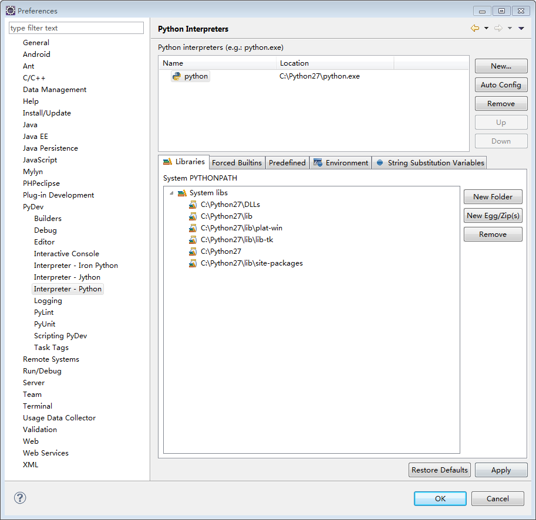安装后就可以使用Pydev创建python工程了。这里选Pydev工程，
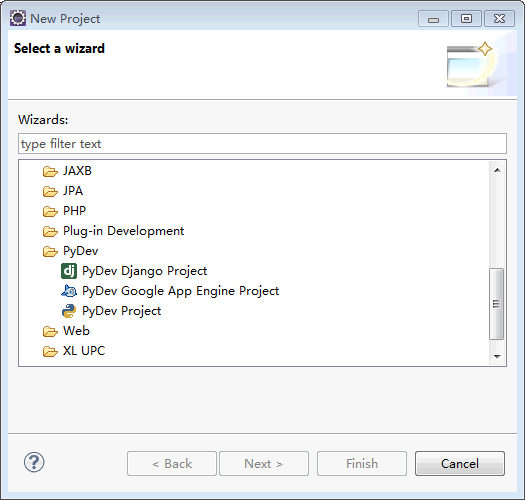把新建工程命名为 MyPython
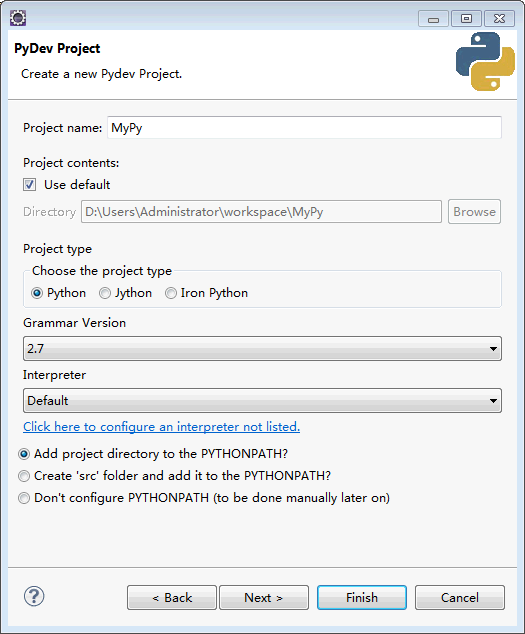不选工程间的引用，并点击Finish，会在workspace下产生新的工程
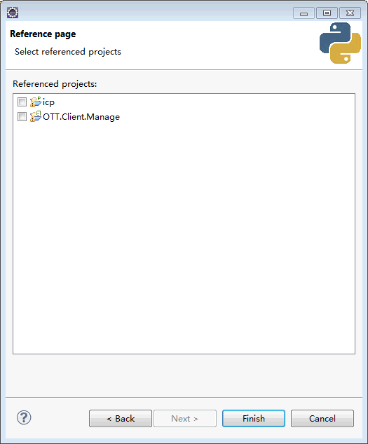创建完工程后，可以添加python module，或python package。这里直接添加一个python module，产生一个新的py文件：
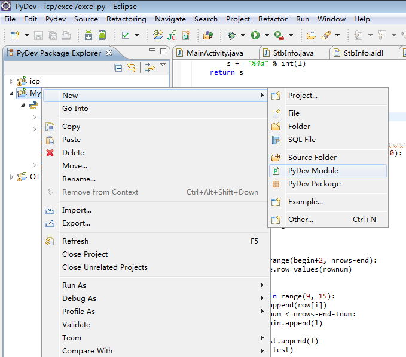输入文件名，HelloWorld，并选择Module Main，
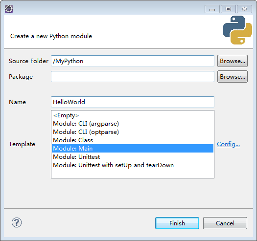第一个py程序像这样：
1 2 3 4 5 6 7 8 9 | #coding:utf-8
'''
Created on 2015-3-10
@author: vincent
'''
if __name__ == '__main__':
print "Hello world."
pass
|
当这个python以主模块运行时(即python xxx.py直接调用)，__name__为__main__，如果是被其他模块import的，则不为__main__。这样可以方便调试每个模块。
点击运行，选择 Python Run， 就可以在console上看到输出了。
自动补全
pydev提供了代码自动提示功能，按Alt+/键能列出所有匹配项
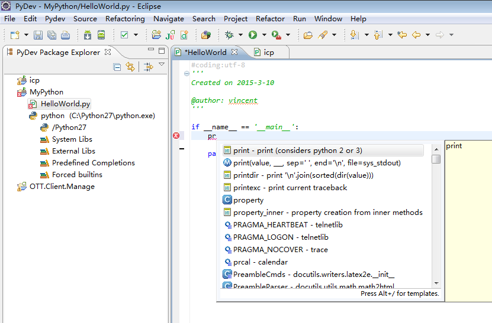鼠标移到函数上，还能显示快捷帮助
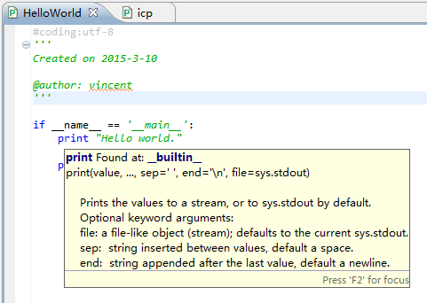自带调试器
设置好断点，并点击Debug图标，就可以开始调试了
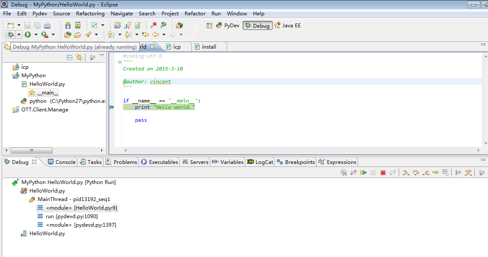{kind=link}
{kind=link}
{kind=link}
{kind=link}
{kind=link}
{kind=link}
{kind=link}
{kind=link}
{kind=link}
{kind=link}
{kind=link}
{kind=link}
{kind=link}
{kind=link}
{kind=link}
{kind=link}
{kind=link}
{kind=link}